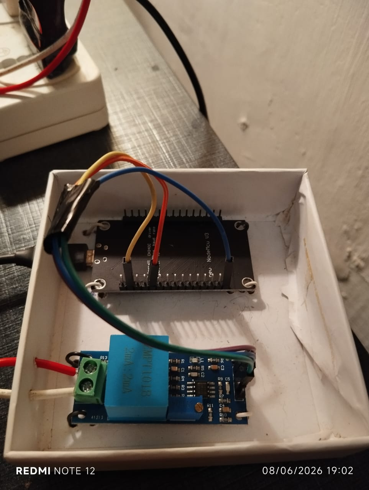
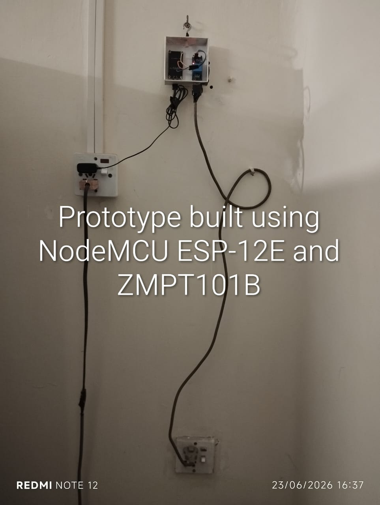
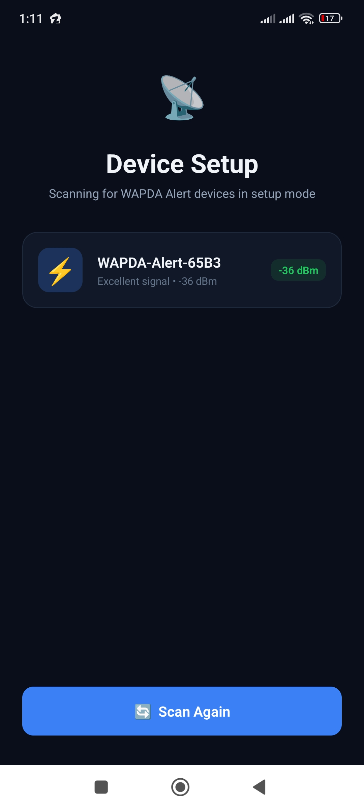
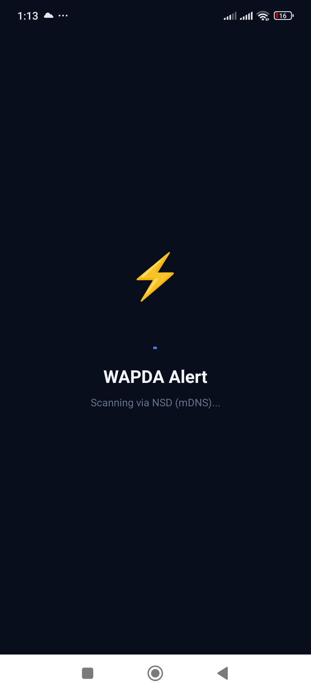
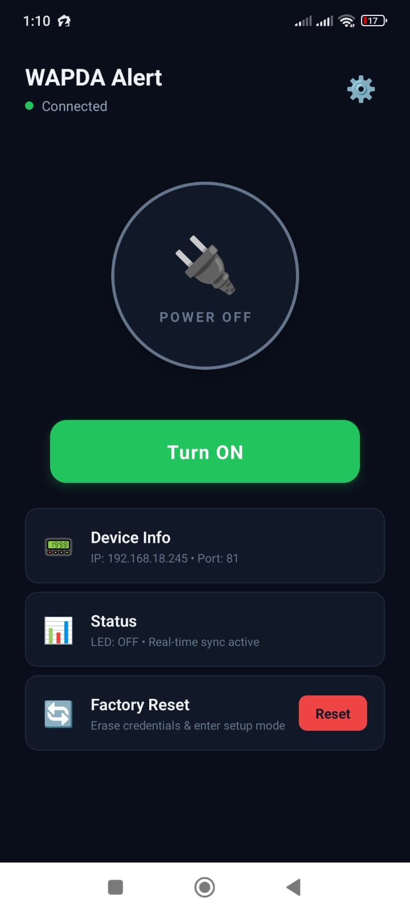

Instant Power Monitoring.
Zero Friction.
A full-stack IoT solution bridging embedded C++ firmware with a premium React Native mobile experience. Designed for real-time local grid alerts.
Engineering Highlights
Built for reliability, speed, and seamless user experience.
Instant Hybrid Provisioning
The ESP8266 hosts a temporary Captive Portal AP. The React Native app connects directly, securely passes WiFi credentials via a native WebView, and receives the new IP synchronously.
Robust Network Discovery
Employs a frictionless, tiered fallback mechanism combining mDNS and lightweight UDP Broadcasts. If the device's IP changes dynamically, the app finds it instantly without flooding the network.
Background Monitoring
Maintains persistent device connection even when closed. Native Android background tasks monitor power states and push local notifications immediately upon grid changes.
Real-Time WebSockets
Low-latency, bidirectional WebSocket communication using a strict JSON protocol ensures state changes are reflected in the UI within milliseconds, alongside an intelligent message queue that buffers commands if the connection drops.
Remote Management
Over-The-Air (OTA) style factory resets. Users can clear WiFi credentials and place the device back into setup mode remotely directly from the mobile interface.
The Hardware
A custom-built monitoring unit powered by a NodeMCU ESP-12E and ZMPT101B voltage sensor.

NodeMCU ESP-12E wired to a ZMPT101B AC voltage sensor module inside a compact enclosure.

The prototype unit installed near the mains input, monitoring the grid voltage in real-time.
The App Experience
A premium dark-mode React Native interface for seamless device setup, discovery, and real-time control.

Device Setup
Scan and connect to WAPDA Alert devices broadcasting in AP mode.

Network Discovery
Automatic mDNS-based scanning locates devices on your home network.

Control Dashboard
Live power status, device info, and remote factory reset at your fingertips.
System Architecture
Firmware (C++)
- Arduino Core for ESP8266
- Dynamic WIFI_AP_STA switching
- WebSockets Server (Port 81)
- EEPROM Credential Storage
Mobile App (React Native)
- Expo Managed Workflow
- expo-background-fetch
- Premium Dark Mode UI
- Custom Network Scanners